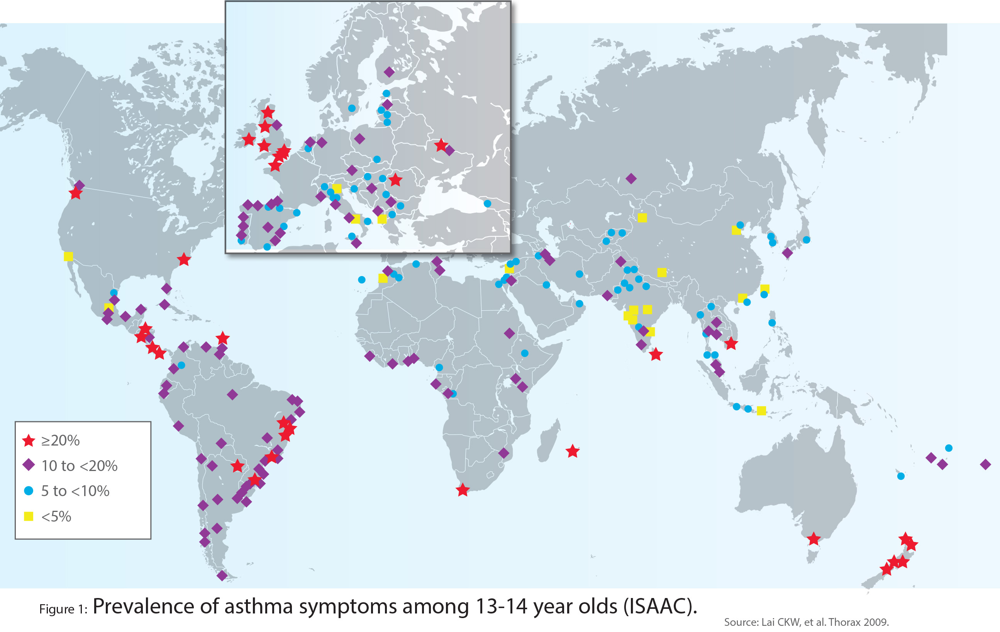
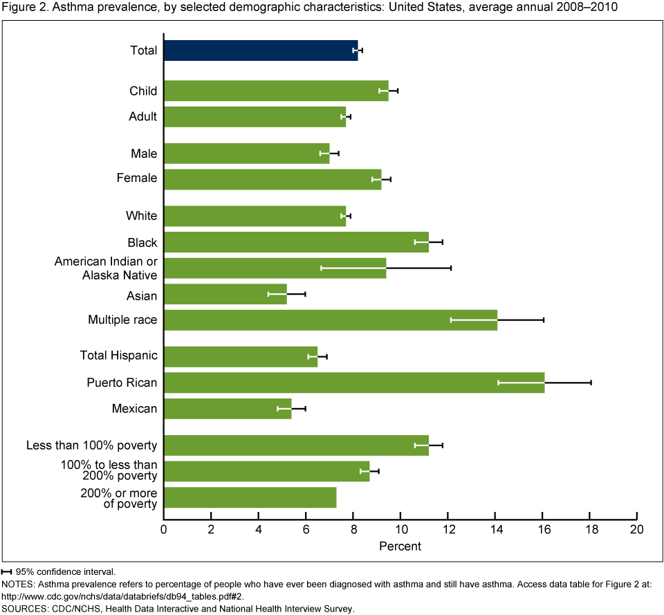
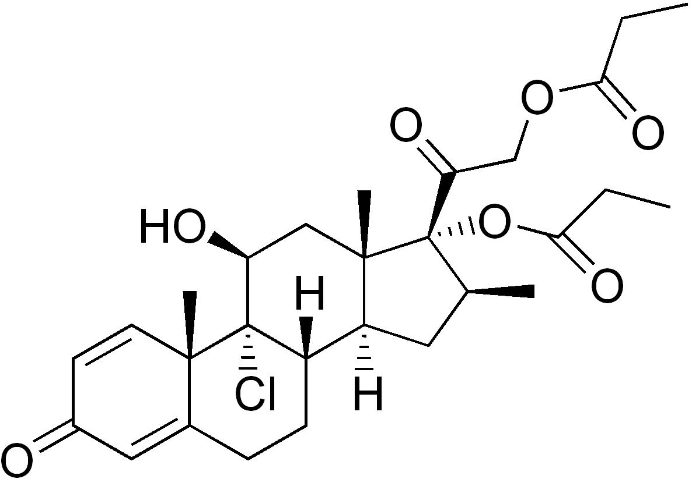
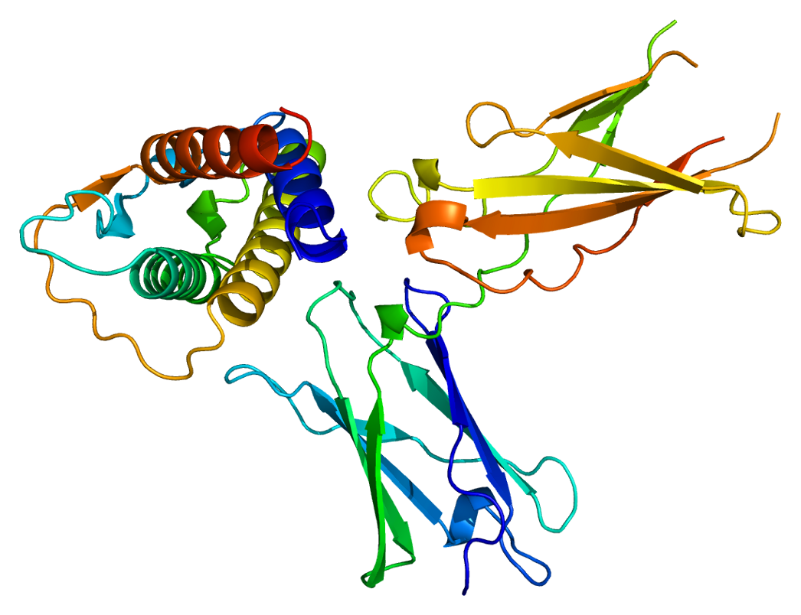
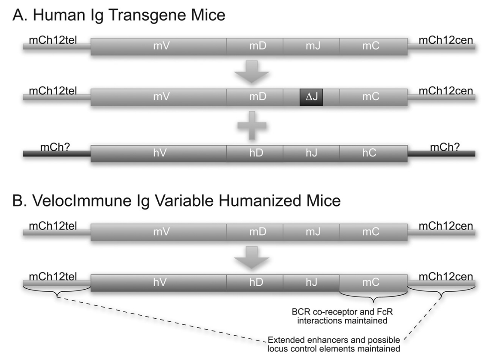
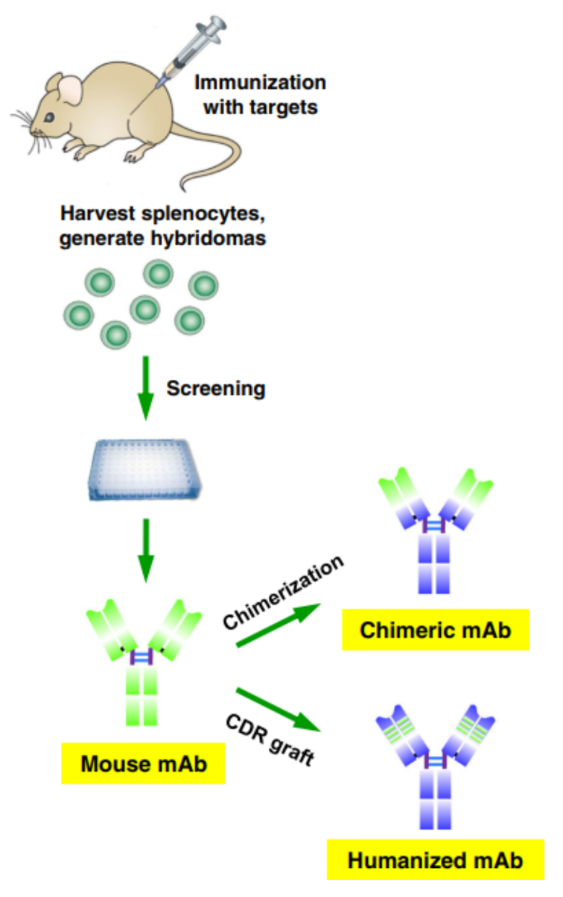
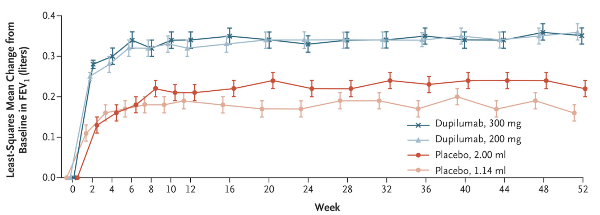
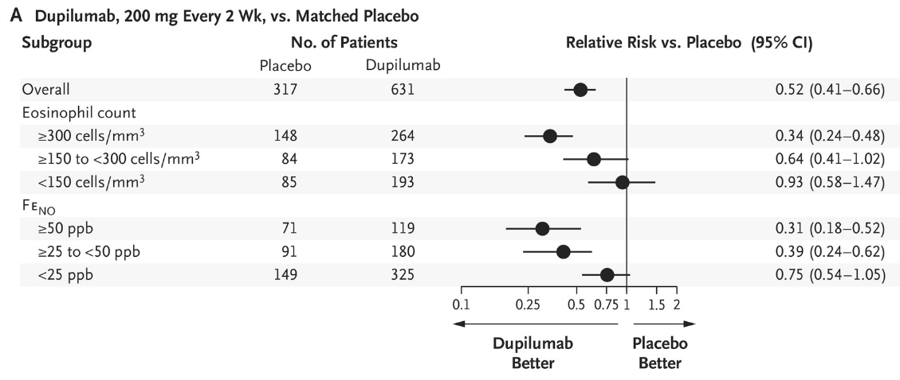
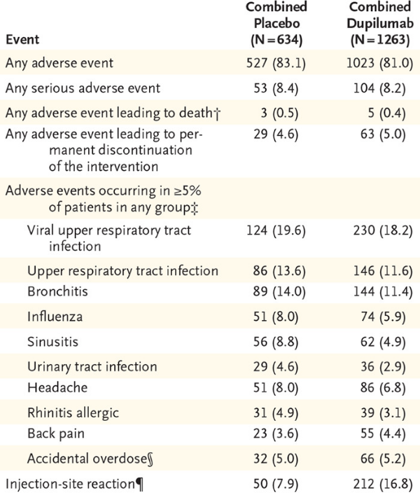

PSPG219


Albuterol (salbutamol)
Inhaled corticosteroids

What is the target of dupilumab? the IL-4\(R\alpha\) (IL4-receptor)


VelocImmune mice have human VDJ regions, but mouse constant and control regions

antibodies generated from mice are sometimes immunogenic
VelocImmune generates antibodies that are significantly less immunogenic, greatly reducing development time
Mice were injected with IL-4R\(\alpha\) receptor protein

FEV measures total lung volume exhaled in first second of exhalation test

Rate of severe asthma exacerbations was ~ half from placebo

Dupilumab Efficacy and Safety in Moderate-to-Severe Uncontrolled Asthma, Castro et al., NEJM 2018